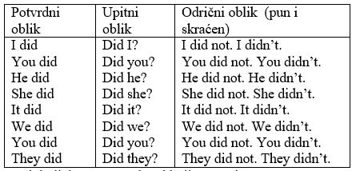

Radionice poklonjene ovde su za obnovu engleskog jezika, sadrže skraćeni podsetnik i mnoge rečenice nemaju prevod. Ovde je data skica programa obuke SME koja se odnosi na engleski jezik. Radionice u okviru obuke SME obiluju primerima sa prevodom. Primeri rečenica se odnose na putovanja, turizam, kulturu, poljoprivredu, pravilnu ishranu, obrazovne i ostale materijale korisne u svakodnevnom životu. Svaka radionica prvo sadrži pravila, a zatim obimnu količinu primera.
Samostalno treba istražiti pomoću interneta sve što se dodatno želi saznati. Cilj ovog podsetnika je da se brzim pogledom možete setiti pravila i izuzetaka. Kao i za bilo koju drugu materiju koju neko želi utvrditi, preporučljivo je da se prave sopstveni primeri, u ovom slučaju po modelima iz podsetnika. Samo se posvećenim radom dobija trajno i upotrebljivo znanje. Proces istraživanja i kreiranja novih primera razvija ideje o daljoj primeni stečenog znanja.
Preporučujem da se napiše lista nepravilnih glagola te da se naprave primeri za svaki glagol. Takođe preporučujem da se koriste prilozi za vreme i mesto tako da se postavke pitanja kreiraju sa ‘’When’’ i ‘’Where’’. Naravno treba praviti primere i sa pravilnim glagolima za sva vremena.
Sav materijal možete slobodno koristiti za smernice u svom angažovanju obučavanja drugih.
Želim Vam puno uspeha u radu.
Srdačno,
osnivač, predsednik i zastupnik udruženja
‚‚ŽURI život uz računarsku inteligenciju‚‚
Nataša Mihajlović,el.ing, autor i master informatike
PR studio za edukaciju ‚‚Radionica IT Kermes‚‚
www.adaptanatasa.com
Budimo odgovorni prema životnoj sredini
Countable nouns
Brojive imenice
book –books
child – children
Uncountable nouns
Nebrojive imenice
Childhood, music, love, sunshine, art, happiness, courage, motivation,
enthusiasm, accommodation, chaos, stress, sugar, water, wheat, milk,
rise, bread, butter, wine, work, gas, electricity, power, weather,
rain, snow, sand, hair, advise, luck, furniture, baggage, traffic,
luggage, transportation, information, money, news, currency, travel,
permission, damage, behavior, happiness, sleep, anger, air, oxygen,
.. POTRAŽITI NA INTERNETU LISTU
Neke nebrojive imenice koristimo KAO BROJIVE kada izražavamo više vrsta npr vina:
Let’s have some wine from Argentina. --NEBROJIVA
Hajde da popijemo malo vina iz Argentine.
For me, the finest wines come from Argentina. --BROJIVA
Za mene, najbolja vina dolaze iz Argentine.
Razlika A little / little
Pass the milk please. I’d like a little. Dodaj mi mleko molim te. Htela bih malo mleka
I take little milk in my coffee. Skoro da ne stavljam mleko u svoju kafu.
Razlika A few /few
Students attend classes during the school year. A few come in June.
Učenici pohađaju nastavu tokom školske godine. Nekoliko ih dolazi u junu.
There were few students in August. U avgustu je bilo malo učenika (skoro da ih nije bilo)
There is… jednina There are… množina
There is one table in the room. U sobi se nalazi jedan sto.
There are two chairs in the room. U sobi se nalaze dve stolice.
Is there one table in the room?
How many chairs are there in the room?
There is not any table in this room.
Is there any chair in the room?
There are not any chairs in that room.
There aren’t two chairs in the room, there is only one.
SOME se koristi u potvrdnim a ANY u odričnim i upitnim rečenicama
Is there any sugar? There is some sugar. There is not any sugar. ---nebrojiva imenica sugar
Are there any apples at the table? There are some apples at the table. There aren’t any apples at the table.
Reflexive pronouns, povratne zamenice (SEBE, SE)
I see myself in the mirror.
Can you hear yourself in this cave?
It was Pavle himself.
Ana red this book all by herself.
This valley is colorful, and lavender itself is strong purple.
Last week in Paris we truly enjoyed ourselves.
You can help yourselves dear people.
They fancies themselves as a plane pilots.
Povratne zamenice se koriste:
Kada su subjekat i objekat isti, sam nad sobom vrši radnju (oblači se, gleda se u ogledalu čuje sebe..)
Za isticanje (It was Pavle himself. To je bio Pavle lično)
Za iskazivanje samostalne radnje bez ičije pomoći, iza predloga by (Ana red this book all by herself)
Objekatske zamenice
Lične zamenice imaju i objekatski padež, i on se upotrebljava kada su objekat glagola ili predloga.
She sees him every Friday at five o’clock.
They have invited me to dinner.
prisvojni pridevi stoje uz imenicu
prisvojne zamenice (osim treće lice jedn, ``it``) stoje samostalno:
Possesive ‘S, prisvojno ‘S
Kada se iskazuje pripadnost npr Milankin sto ili automobil mojih roditelja, dodaje se apostrof s, tj ‘s na imenice u jednini, a na imenice u pravilnoj množini dodaje se samo apostrof ‘. Nepravilna množina kao npr children se nastavlja sa se apostrof s, tj ‘s. Primeri:
This is Milanka‘s desk. My parents‘ car is red. Women‘s clothes. These are our children‘s toys. People‘s opinion.
Takođe, prisvojno ‘s se koristi i za lokacije koje nekom pripadaju, bez imenice iza sebe, izostavlja se reč shop ili restaurant zna se o čemu se priča:
Chemists‘s apoteka
Butcher‘s mesara
Florist‘s cvećara
We are dining tonight at Marjan‘s. -večeramo kod Marjana/ podrazumeva se da je restoran
Go to dentist‘s. -idi kod zubara
Koristi se takođe i u izražavanju vremenskih perioda:
Yesterday‘s news
A week‘s holyday
Ten minutes‘ brake
Indefinite article Neodređeni član A/AN
A ispred suglasnika čita se kao ə
AN ispred samoglasnika čita se kao ən
Označava lice ili pojam koje prvi put pominjemo ili ne poznajemo, uvek se koristi za jedninu.
A woman……….. ə
An idea……………… ən
Označava čitavu vrstu tj koristi se ispred zajedničkih imenica
A cat is an independent animal.
Koristi se ispred imenskog dela predikata
She is a painter.
He became an obsessed scientist.
Koristi se ispred zanimanja, profesija
His father is a teacher
Her mother is an engineer
Koristi se u nekim izrazima za količinu
A day, a month, a year, a week – dnevno, mesečno, godišnje, nedeljno
There are several subway trains a day.
još neki primeri:
What a beautiful day
She is such an actress
What a pity
Definite article Određeni član THE ꝺə/ꝺi
ispred suglasnika čita se kao ꝺə
ispred samoglasnika čita se kao ꝺi
Koristi se i u jednini i u množini za označavanje već pomenutih ili poznatih lica i stvari (tačno određeni čovek ili ideja)
The man ... ꝺə / The idea … ꝺi
The woman you met is my sister
The painting on the wall is mine
Koristi se ispred superlativa i rednih brojeva
The best ... ꝺə
The eighth … ꝺi
Označava jedinstvene pojmove (postoji samo jedan na svetu)
the past, the weather, the Sun
The Earth … ꝺi / The Moon ... ꝺə
Koristi se da označi čitavu naciju ispred imena pripadnika tačno određene narodnosti
The Italian, The French, The Serbian ..
Koristi se ispred imena geografskih pojmova
The Atlantic, The Indian ocean, the Sava river, the Adriatic sea, the Karpati mountain, The Danube, The Himalayas
Koristi se ispred imena institucija I javnih objekata u gradu
The National Museum
Koristi se ispred naziva instrumenata
I am playing the piano.
Ne koristi se kada se misli na osnovnu funkciju građevine a koristi se kada se misli na konkretnu građevinu
He lives next to the hospital. James broke his leg and ended up in hospital.
IZOSTAVLjANjE ČLANA:
Postoje pridevi koji se porede nepravilno i njihovi specifični oblici se uče kao nove reči.
Primeri:
Little, less, the least
Good, better, the best
Bad, better, the worst
Many, more, the most
Isto je i za Much:
Much, more, the most
Govori radnju koja se ponavlja (every day –morning –afternoon -evening -week -month -year, usually, often..),
zatim govori činjenice (The Earth goes around the Sun = Zemlja se kreće oko Sunca)
i govori mišljenje o karakteristikama koje su uvek istina (He swims = On pliva)
Gradi se od sadašnjeg vremena glagola to do (činiti, raditi) koji samo za treće lice
jednine (he, she, it) glasi does i infinitivne osnove glagola koji se menja
(infinitivni oblik je to play, infinitivna osnova je play, rečenica u sadašnjem prostom vremenu bi bila
“She plays violin” ili “I play piano”).
Kolokvijalno rečeno, pomoćni glagol to do se stapa sa glagolom koji se menja I samo za treće lice jednine se vidi nastavak s (work +do= work, work +does= works). Kada se gradi upitni ili odrični oblik, kolokvijalno rečeno pomoćni glagol se vadi iz glagola koji se menja te za treće lice jednine glagol koji opisuje radnju (glagol koji se menja) gubi nastavak s.
Primeri:
I awake at 5 o’clock every morning.
Do I awake at 5 o’clock every morning?
I don’t awake at 5 o’clock every morning.
You bring flowers every Monday in office.
Where do you bring flowers every Morning?
You don’t bring flowers every Monday in office.
He buys groceries weekly.
Does he buy groceries weekly?
He doesn’t buy groceries weekly.
She chooses different dress every day.
Does she choose different dress every day?
She doesn’t choose different dress every day.
This lantern lights every night.
Does this lantern light every night?
This lantern doesn’t light every night.
We ride horses every Sunday.
Do we ride horses every Sunday?
We don’t ride horses every Sunday.
You swim every Saturday morning.
Do you swim every Saturday morning?
You don’t swim every Saturday morning.
They write letters every Saturday afternoon.
Do they write letters every Saturday afternoon?
They don’t write letters every Saturday afternoon.
Govori radnju koja se završila tj dogodila u kratko vreme u prošlosti
(yesterday, three years ago, last Friday, in 2005, few minutes ago, last week, the day before yesterday, ..)
Gradi se od prošlog vremena glagola to do (činiti, raditi) i infinitivne osnove glagola koji se menja.

Kolokvijalno rečeno glagol koji se menja se stapa sa pomoćnim glagolom did i time pravilni glagoli dobijaju nastavak ed, dok nepravilni preuzimaju specifičan oblik koji se čita u drugoj koloni nepravilnih glagola. Kada se gradi upitni ili odrični oblik, kolokvijalno rečeno pomoćni glagol se vadi iz glagola koji se menja te glagol koji opisuje radnju vraća svoj oblik infinitivne osnove a pomoćni glagol did formira upitni ili odričan oblik. Irregular Verbs List se može pronaći pomoću interneta, prva kolona je infinitive, druga kolona past simple a treća kolona je oblik prošlog participa tj past participle.
Primeri za nepravilne glagole:
I awoke at 5 o’clock yesterday morning.
Did I awake at 5 o’clock yesterday morning?
I didn’t awake at 5 o’clock every morning.
You brought flowers last Monday in office.
Where did you bring flowers last Morning?
You didn’t bring flowers last Monday in office.
He bought groceries yesterday.
Did he buy groceries yesterday?
He didn’t buy groceries yesterday.
She chose red dress last Friday.
Did she choose red dress last Friday?
She didn’t choose red dress last Friday.
This lantern lit last night.
Did this lantern light last night?
This lantern didn’t light last night.
We rode horses last Sunday.
Did we ride horses last Sunday?
We didn’t ride horses last Sunday.
You swam this morning.
Did you swim this morning?
You didn’t swim this morning.
They wrote letters last Saturday afternoon.
Did they write letters last Saturday afternoon?
They didn’t write letters last Saturday afternoon.
Primeri za pravilne glagole:
I agreed with this last week.
Did I agree with this last week? .
I didn’t agree with this last week. .
You wished a cake yesterday. .
Did you wish a cake yesterday? .
You didn’t wish a cake yesterday. .
He talked about that last month. .
Did he talk about that last month? .
He didn’t talk about that last month. .
She looked for this book last night. .
Did she look for this book last night? .
She didn’t look for this book last night. .
Monkey jumped from the tree few minutes ago. .
Did monkey jump from the tree few minutes ago? .
Monkey didn’t jump from the tree few minutes ago? .
We walked by the Sava river last Saturday. .
Did we walk by the Sava river last Saturday? .
We didn’t walk by the Sava river last Saturday. .
You danced last Sunday. .
Did you dance last Sunday? .
You didn’t dance last Sunday. .
They listened to the music last Friday. .
Did they listen to the music last Friday? .
They didn’t listen to the music last Friday. .
Govori radnju koja traje upravo sada (now, at the moment ..) kao i radnju koja se planira u vrlo bliskoj budućnosti
(today, this evening..) Primer korišćenja sadašnjeg trajnog vremena za blisku budućnost:
They are arriving late this evening.
Gradi se od sadašnjeg vremena pomoćnog glagola to be (biti) i sadašnjeg participa glagola koji se menja (glagol +ing).
Present participle (sadašnji particip) se gradi kada se na infinitivnu osnovu doda nastavak ing.
Podsećamo infinitivna osnova je glagol infinitiva bez to.
U trajnim vremenima je pomoćni glagol već izdvojen iz glagola koji se menja tako da se upitni i odrični oblik
jednostavno gradi po poznatim principima.
Za primer: They are arriving late this evening. Upitan i odričan oblik glase respeektivno:
Are they arriving late this evening? They are not arriving late this evening.
Postoje glagoli koji se generalno ne upotrebljavaju u trajnom sadašnjem vremenu. Reč je najčešće o glagolima videti (see),
čuti (hear), želeti (wish), hteti (want), setiti se (remember), razumeti (understand), a zatim i znati (know),
mirisati (smell), okusiti (taste) i slično. Oni se za sadašnje vreme koriste u formi prostog sadašnjeg vremena
(simple present continuous). Izjave u sadašnjosti za ove glagole bi bile:
I see you are painting now. You hear birds now. She wants to go to the theater tonight. We wish you safe flight today.
I remember he is traveling north today, isn’t he? You understand that I want to cook risotto today.
She knows they are bringing her a gift today. I smell roses now.
Primeri:
I am building castle in a sand today.
When am I building castle in a sand?
I am not building castle in a sand today.
You are choosing the dress now.
What are you choosing now?
Why aren’t you choosing the dress now? = zašto ne biraš haljinu sada?
You aren’t choosing the dress now.
He is playing the guitar for her at the moment.
Who is he playing the guitar for? = za koga on svira gitaru (who---- for)
He isn’t playing the guitar at the moment.
She is singing in hall now.
Where is she singing now?
She isn’t singing in hall now.
It is getting late now. = Postaje već kasno sada.
Is it getting late now?
Isn’t it getting late now?
It is not getting late now.
We are putting this away now.
Are we putting this away now?
Why aren’t we putting this away now?
We are not putting this away now.
You are driving a red car now.
What are you driving now?
You aren’t driving a red car now.
They are swimming at the pool, now.
Where are they swimming now?
They aren’t swimming at the pool, now.
Govori radnju koja je trajala jedno vreme u prošlosti samostalno ili uz neku drugu trajnu prošlu radnju
(povezuju se rečenice sa while=dok) ili sve dok je nije prekinula druga radnja koja je karatko trajala
(povezuju se rečenice sa when=kad)
Sa “while” se povezuju dve rečenice u trajnom prošlom vremenu
He was playing the piano while she was singing
Sa “when” se povezuju rečenica u trajnom prošlom i rečenica u prostom prošlom vremenu
She was swimming when he jumped in pool.
Gradi se od prošlog vremena pomoćnog glagola to be (nepravilan glagol, was/were ) i
sadašnjeg participa glagola koji se menja (glagol +ing). Present participle (sadašnji particip)
se gradi kada se na infinitivnu osnovu doda nastavak ing. Podsećamo infinitivna osnova je glagol infinitiva bez to.
Glagol to be (biti) je nepravilan glagol i kao što se vidi u drugoj koloni u prošlom vremenu glasi was za prvo i treće lice jednine, odnosno glasi were za ostala lica.
Glagoli koji nisu uobičajeni za sadašnje trajno nisu upotrebljivi ni u prošlom trajnom vremenu. Reč je oglagolima smell, taste, hear, see, know, remember, understand, want, wish..
Primeri:
I was beginning to paint a room yesterday, when my children came in and drew flowers over my work.
Ja sam započinjala (begin -- beginning) da krečim sobu juče, kada su moja deca ušla (come in – came in) i crtala (draw -- drew) cveće preko mog rada.
U ovoj rečenici begin je u prošlom trajnom a prekinuta je radnja sa prošlim prostim (came, drew)
What was I beginning to do yesterday when children came? Šta sam započinjala da radim (what--- to do)
Who did come in, when I was beginning to paint a room yesterday? Ko je ušao kada sam započinjala da krečim sobu juče?
I wasn’t beginning the painting yesterday when children came.
You were wrapping the painting last night while I was cooking a dinner. Umotavao si sliku dok sam ja kuvala. U ovoj rečenici je painting slika, a obe radnje (wrapping , cooking) su u trajnom prošlom vremenu, dešavale su se u isto vreme.
What were you wrapping while I was cooking last night?
Wasn’t I cooking while you were wrapping the painting last night? Zar nisam kuvala dok si umotavao sliku sinoć.
You weren’t wrapping the painting last night while I was cooking a dinner.
He was cutting the meat in the kitchen yesterday.
Where was he cutting the meat yesterday?
He wasn’t cutting the meat in the kitchen yesterday.
She was setting the table for guests few hours ago, when they accidentally tore table cloth.
Who was she setting the table for?
She wasn’t setting the table for guests few hours ago.
Our dog Spot was sleeping this morning when children threw toys toward it.
Naš pas Spot je spavao kada su deca bacila igračke prema njemu.
Was our dog sleeping this morning?
Did children throw toys toward our dog while it was sleeping this morning?
Threw postaje throw u upitnoj rečenici.
Da li su deca bacila igrčke ka našem psu dok je on spavao?
Potvrdna rečenica when-kada a upitna while –dok.
Spot wasn’t sleeping this morning when children threw toys toward it.
We were standing in the rain when you arrived.
Were we standing in the rain when you arrived?
We weren’t standing in the rain when you arrived.
You were reading last evening when he sang the song.
Did he sing the song while you were reading last evening?
Were you reading last evening when he sang the song?
You weren’t reading last evening when he sang the song.
They were walking when he shot the rabbit yesterday.
Didn’t he shoot the rabbit while they were walking yesterday?
Were they walking when he shot the rabbit yesterday?
They weren’t walking when he shot the rabbit yesterday.
Govori radnju za koju verujemo da će se dogoditi
(Marija will play the piano next Friday.) Zatim govori radnju o trenutnoj budućnosti,
o odluci koja se donosi u trenutku govora (There is truck full of apples, I will go and buy some.)
Gradi se od modalnog glagola will i infinitivne osnove glagola koji se menja
(infinitivni oblik je to play, infinitivna osnova je play).
Kada hoćemo da iskažemo budućnost koja je vrlo verovatna, tj znamo da će se dogoditi jer su uslovi za to
ostvareni onda koristimo konstrukciju gradnje budućeg vremena to be going to + infinitivna osnova glagola
koji se menja. Korišćenje sadašnjeg trajnog vremena za verovatnu budućnost:
They are arriving late this evening; they are in the plane now.
I bought the tickets for the Opera; we are going to see Carmen tonight.
Primeri shall/will:
I shall make a cake tomorrow.
Shall I make a cake tomorrow?
I shan’t make a cake tomorrow.
You will see the ocean next month.
When will you see the ocean?
Won’t you see the ocean next month? =Zar nećeš videti ocean sledećeg meseca?
You will not see the ocean next month.
He will speak with them next weekend.
With whom will he speak next weekend?
Who will he speak with next weekend?
He will not speak with them next weekend.
She will spend some money for next holiday.
Will she spend any money for next holiday?
She won’t spend any money for next holiday.
It will be sunny day tomorrow.
Will it be sunny day tomorrow?
It won’t be sunny day tomorrow.
We shall visit my brother next Friday.
Shall we visit my brother next Friday?
We shall not visit my brother next Friday.
You will learn that poem tomorrow.
Will you learn that poem tomorrow?
You will not learn that poem tomorrow.
They will send a letter next Tuesday.
Will they send a letter next Tuesday?
They will not send a letter next Tuesday.
Primeri to be going to:
I am going to sing tonight.
Am I going to sing tonight?
I am not going to sing tonight.
You are going to dance tomorrow.
When are you going to dance?
You aren’t going to dance tomorrow.
He is going to play the piano this afternoon.
Is he going to play the piano this afternoon?
He isn’t going to play the piano this afternoon.
She is going to see her friend in few hours.
Who is she going to see in few hours?
She isn’t going to see her friend in few hours.
It is going to be fine dinner tonight.
Is it going to be fine dinner tonight?
It isn’t going to be fine dinner tonight.
We are going to have a party tomorrow.
When are we going to have a party?
We aren’t going to have a party tomorrow.
You are going to show your work soon.
Are you going to show your work soon?
You aren’t going to show your work soon.
They are going to travel tomorrow.
Are they going to travel tomorrow?
They are not going to travel tomorrow.
Govori
Gradi se pomoću sadašnjeg vremena pomoćnog glagola to have (has za treće lice jednine,
have za sva ostala lica) i prošlog participa glagola koji se menja.
Podsetimo se, past participle ima nastavak –ed za sve pravilne glagole dok se oblik
nepravilnog glagola nalazi u trećoj koloni liste irregular verbs.
Za razliku od druge kolone gde se oblik glagola pri spoju sa pomoćnim did
vraća u prvobitnu infinitivnu osnovu kada se pomoćni glagol did izvuče za upitni
ili odrični oblik, glagol iz treće kolone (kao i pravilan glagol koji se menja sa nastavkom -ed)
ostaje u svom obliku i u upitnoj i odričnoj rečenici.
Naime, podsećamo se da je druga kolona za nepravilne glagole u prošlom prostom vremenu gde odričan
i upitan oblik formira pomoćni glagol did, dok je treća kolona za perfektno (sadašnje i prošlo)
vreme gde odričnu i upitnu rečenicu formira pomoćni glagol to have (have/has za sadašnje tj had
za prošlo perfektno vreme)
Prosto prošlo vreme razlikujemo od sadašnjeg perfektnog po tome što se simple past desio tačno u određeno vreme u prošlosti
Primeri nepravilni glagoli:
I have written the letter few days ago.
Have I written the letter few days ago?
I haven’t written the letter few days ago.
You have thrown your toys toward the dog last week.
Have you thrown your toys toward the dog last week?
You haven’t thrown your toys toward the dog last week.
He has torn those documents months ago.
Has he torn those documents months ago?
He hasn’t torn those documents months ago.
She has swum in the lake last summer.
Has she swum in the lake last summer?
She hasn’t swum in the lake last summer.
This tree has stood here for decades.
For how long has this tree stood here?
This tree hasn’t stood here for decades.
We have driven my dad’s Oldsmobile last May in Paris.
Where have we driven my dad’s Oldsmobile last May?
We haven’t driven my dad’s Oldsmobile last May in Paris.
You have brought lavender flowers here last summer.
Have you brought lavender flowers here last summer?
You haven’t brought lavender flowers here last summer.
They have bought a house last spring.
Have they bought a house last spring?
They haven’t bought a house last spring.
Primeri pravilni glagoli (popuniti različite pravilne glagole za različita lica):
I have …worked… few days ago.
Have I ……work…. few days ago?
I haven’t ……work…. few days ago.v
You have ………………. last week.
Have you ………………. last week?
You haven’t ………………. last week.
He has ………………. months ago.
Has he ………………. months ago?
He hasn’t ………………. months ago.
She has ………………. last summer.
Has she ………………. last summer?
She hasn’t ………………. last summer.
It has ………………. for decades.
Has it ………………. for decades?
It hasn’t ………………. for decades.
We have ………………. last May in Paris.
Where have we ………………. last May?
We haven’t ………………. last May in Paris.
You have ………………. last summer.
Have you ………………. last summer?
You haven’t ………………. last summer.
They have ………………. last spring.
Have they ………………. last spring?
They haven’t ………………. last spring.
Govori radnju koja se završila pre neke druge prošle radnje, može se susresti povezivanje
zavisnih rečenica izrazima after, when i because.
After they had left dancing floor, they began to feel dizzy.
When he had finished skating he put off his ice skates.
Because she had studied diligently, she passed exam with best grade.
Gradi se pomoću prošlog vremena pomoćnog glagola to have (piše se had) i prošlog participa glagola
koji se menja (pravilni glagol –ed a nepravilni ima oblik iz treće kolone liste irregular verbs)
Važno je ne zaboraviti da pri upitnim i odričnim rečenicama glagol koji govori radnju ostaje u svom prošlom participu
tj sa nastavkom –ed ili iz treće kolone ako je nepravilan. Upitnu I odričnu rečenicu definiše pomoćni glagol had.
Primeri (popuniti rečenice sa različitim nepravilnim glagolima za različita lica):
I had begun a class when Marko entered the classroom.
Who did enter the classroom when I had begun a class?
Had I begun a class when Marko entered the classroom?
I had not begun a class when Marko entered the classroom.
You had been ____________________________________.
Had you been ____________________________________?
You had not____________________________________.
He had been____________________________________.
Had he been ____________________________________?
He hadn’t ____________________________________.
She had been ____________________________________.
Had she been ____________________________________?
She hadn’t ____________________________________.
It had been ____________________________________.
Had it been ____________________________________?
It had not ____________________________________.
We had been____________________________________.
Had we been ____________________________________?
We hadn’t ____________________________________.
You had been ____________________________________.
Had you been ____________________________________?
You had not ____________________________________.
They had been ____________________________________.
Had they been ____________________________________?
They hadn’t ____________________________________.
Govori radnju bez potrebe da se zna ko vrši aktivnost. Primer pasivne rečenice je “rečeno je da…”
(it is said that…,)
Ukoliko se spominje u pasivnoj rečenici vršioc radnje onda se koristi ‘’by’’
(song was played by him = pesma je odsvirana od strane njega.)
Gradi se od pomoćnog glagola biti (to be) i prošlog participa (III kolona) glagola koji se menja.
Različita vremena određuje oblik glagola to be po poznatim pravilima.
U nastavku su dati primeri, po jedan za svako vreme.
Sačiniti primere za ostale zamenice nad kojima se vrši radnja (nepravilni i pravilni glagoli).
The present simple tense, sadašnje prosto vreme
Wild animals in cities are kept in Zoo parks.
Are wild animals kept in Zoo parks?
Wild animals in cities are not kept in Zoo parks.
The Past Simple tense, prošlo prosto vreme
She was awaken very early yesterday morning by her children.
Who was she awaken by yesterday morning?
She wasn’t awaken very early yesterday morning by her children.
The present continuous tense, sadašnje trajno vreme
The piano is being played at the moment.
What is being played at the moment?
Is piano being played at the moment?
The piano isn’t being played at the moment.
The past continuous tense, prošlo trajno vreme
These letters was being written last weekend.
These letters wasn’t being written last weekend.
When was these letters being written?
The future tense, Buduće vreme
Lavander flowers will be brought tomorrow.
When will Lavander flowers be brought?
Lavander flowers will not be brought tomorrow.
These documents are going to be torn tonight.
These documents are not going to be torn tonight.
When are these documents going to be torn?
The present perfect tense, sadašnje perfektno vreme
This hotel has been sold to Norwigans.
Who has this hotel been sold to?
This hotel hasn’t been sold to Norwigans.
The past perfect tense, prošlo perfektno vreme
His car had been stolen years ago.
Had his car been stolen years ago?
His car hadn’t been stolen years ago.